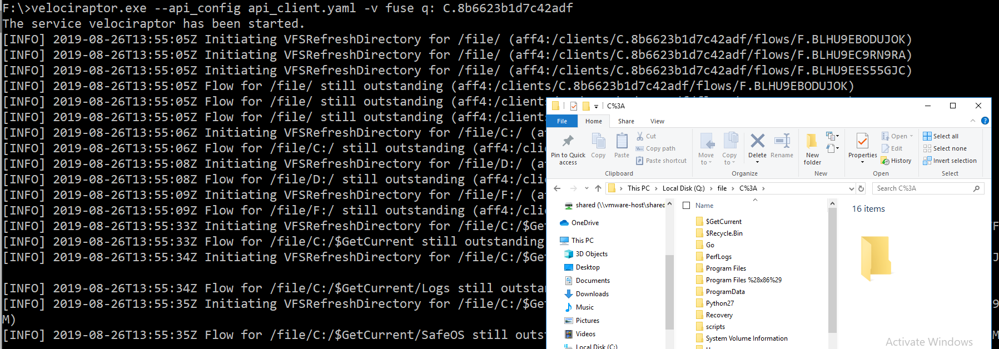

The Velociraptor API and FUSE
The Velociraptor GUI is very useful, but for the power user, the Velociraptor API provides a powerful mechanism to integrate and automate. We previously discussed how the Velociraptor API can be used by external programs. This post explore a sample program that uses the API and presents a client’s VFS as a FUSE directory.
This allows us to navigate the remote end point’s file system as if it was mounted locally - we can list directories or fetch files, or even open remote files using third party programs. All the while, these actions are fully audited on the server and the collected files are stored in Velociraptor’s file store for archiving and evidence preservation.
Overview
Consider an analyst investigating an end point. The analyst has some third party tools on their workstation which they would like to use on files obtained from the end point.
Filesystem in Usespace (FUSE) is a way of creating the illusion of a real filesystem using software. When various programs on the computer requests filesystem operations, such as listing files in a directory or reading a file, Velociraptor takes over and emulates these requests.
Velociraptor’s built in FUSE program emulates a filesystem by exporting a client’s cached VFS on the server to the FUSE layer. If the analyst attempts to list a directory that the server has no cache of - the server will issue a new directory listing request from the endpoint. If the endpoint is currently online, the updated directory listing will be returned to the server, and in turn relayed to the analyst’s workstation.
The overall effect is that as the analyst navigates around the FUSE filesystem on their workstation, they are issuing collection requests from the endpoint, and reading their responses in such as way that it appears the endpoint is really mounted on the FUSE filesystem.

The above figure shows all the components and how they are
related. Assume the FUSE filesystem is mounted on drive Q: in the
analyst’s workstation:
Suppose the analyst is navigating the file
Q:\file\using Windows Explorer.Velociraptor’s FUSE program running on the analyst workstation will issue an API request to list the
filedirectory within the client’s VFS on the server.If the server has a locally cached version of this VFS directory in its data store it will return it immediately.
However, if no server side cache exists, the FUSE program will issue a directory listing request to the endpoint.
The endpoint will respond to this and return the directory listing (if it is currently online).
Now the server will contain a cached copy of the VFS directory and can return it (just as in step 3 above).
The Velociraptor FUSE program on the workstation can return the directory listing to the Windows kernel and this will be fed back into the Windows Explorer. The end result is that Windows Explorer appears to be navigating the endpoint’s filesystem directly.
You can see this process in the screenshot below:

Do not run the fuse API command as a different user to what is currently logged in (e.g. do not run as Administrator). If you do then you will not be able to see the FUSE drive in your user’s desktop session.
For example if you are logged in as user “Test”, then any FUSE drives created by Velociraptor running as user Test are only visible to user Test. If you run the above command as an elevated UAC prompt then user Test will be unable to see the new drive.
Running the FUSE program
On Windows filesystem in userspace is implemented by the WinFSP
project. You will need to
download and install it
first.
We require an API key to use the fuse feature so generate one first on the server:
$ velociraptor --config server.config.yaml \
config api_client --name FUSE > api_client.yaml
Now simply copy the generate api_client.yaml file to the analyst’s
workstation. You can mount any client’s VFS by simply specifying its
client id and a drive letter to access it:
C:\Program Files\Velociraptor>Velociraptor.exe --api_config f:\api_client.yaml -v fuse q: C.8b6623b1d7c42adf
The service Velociraptor has been started.
[INFO] 2019-08-26T14:12:28Z Initiating VFSRefreshDirectory for /file/C:/Go/ (aff4:/clients/C.8b6623b1d7c42adf/flows/F.BLHUHJ0RDGCRU)
[INFO] 2019-08-26T14:12:28Z Flow for /file/C:/Go/ still outstanding (aff4:/clients/C.8b6623b1d7c42adf/flows/F.BLHUHJ0RDGCRU)
...
Simply press Ctrl-C to stop the FUSE program as any time.
Conclusions
The FUSE feature is a perfect example of a useful API program. The program fully automates the Velociraptor server - it received cached information about the client’s VFS status, and then automatically issues new collection requests as needed.
This kind of automated control of the Velociraptor server opens the door to many such applications. From automated response to remediation and automated evidence collection.
Some users has asked us what the difference between the FUSE program and other tools, e.g. F-Response which also create the illusion that the remote system is mounted on the analyst’s workstation. The main difference is that Velociraptor does not export the raw block device from the endpoint - it simply exports the files and directories we collected already. So for example, it is not possible to run a low level disk analysis system (such as X-Ways) on the mounted FUSE drive. However you can still run specialized file parsers (such as Kape or log2timeline) as long as they do not require access to the raw devices.